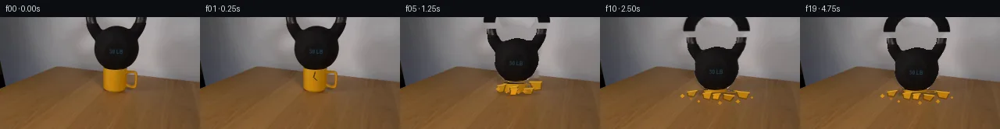

![首帧]()

Round 00
2026-11-05T14:36:17.743687+00:00像素候选变化代码 +305/−0inspection 更新
pixels c2d94657f1b5412d · code 381bcb0aef6940ed
查看本轮 generate.py 真实 diff
--- previous/generate.py +++ current/generate.py @@ -0,0 +1,305 @@ +from pathlib import Path + +import cv2 +import numpy as np +from PIL import Image, ImageDraw + +from artifact_io import save + + +ROOT = Path(__file__).resolve().parent +H, W = 144, 256 +PAD = 36 +RNG = np.random.default_rng(189) + + +def polygon_mask(points): + out = np.zeros((H, W), np.uint8) + cv2.fillPoly(out, [np.asarray(points, np.int32)], 255) + return out + + +def alpha_over(dst, src, alpha): + """Alpha composite uint8 RGB using a float/uint8 scalar alpha plane.""" + a = np.asarray(alpha, np.float32) + if a.max() > 1.0: + a = a / 255.0 + a = a[..., None] + return np.clip(src.astype(np.float32) * a + dst.astype(np.float32) * (1.0 - a), 0, 255).astype(np.uint8) + + +def build_masks(source): + # Main cast-iron body, measured row-by-row from the dark silhouette. + body = polygon_mask([ + (112, 15), (116, 22), (121, 29), (122, 39), (121, 46), + (123, 52), (126, 57), (129, 61), (132, 64), (138, 67), + (158, 67), (164, 64), (168, 60), (171, 56), (174, 50), + (176, 45), (177, 38), (176, 31), (179, 23), (184, 15), + ]) + + # In the top 15 rows the handle has a wall-colored opening, so use the + # measured dark pixels rather than filling the whole outer contour. + luminance = source.mean(axis=2) + handle = np.zeros((H, W), np.uint8) + yy, xx = np.indices((H, W)) + handle[(yy < 16) & (xx >= 107) & (xx <= 191) & (luminance < 96)] = 255 + handle = cv2.morphologyEx(handle, cv2.MORPH_CLOSE, np.ones((2, 2), np.uint8)) + bell = np.maximum(body, handle) + + # Yellow mug: a measured tapered body plus only chromatic pixels of the + # right-hand handle, preserving its central hole. + mug_body = polygon_mask([(132, 64), (162, 66), (162, 86), (158, 94), + (153, 97), (139, 96), (134, 92)]) + r, g, b = [source[..., i].astype(np.int16) for i in range(3)] + yellow = ((r > 123) & (g > 78) & (b < 83) & (r - g > 23) & + (g - b > 25) & (xx >= 128) & (xx <= 178) & + (yy >= 63) & (yy <= 98)).astype(np.uint8) * 255 + handle_zone = np.zeros((H, W), np.uint8) + handle_zone[67:94, 158:179] = 255 + mug_handle = cv2.bitwise_and(yellow, handle_zone) + mug_handle = cv2.morphologyEx(mug_handle, cv2.MORPH_CLOSE, np.ones((3, 3), np.uint8)) + mug = np.maximum(mug_body, mug_handle) + return bell, mug + + +def build_clean_plate(source, bell_mask, mug_mask): + """Row-aware deterministic local inpaint for areas revealed by motion.""" + synthetic = source.astype(np.float32).copy() + rng = np.random.default_rng(190) + for y in range(H): + if y < 64: + lband = source[y, 84:104].astype(np.float32) + rband = source[y, 196:216].astype(np.float32) + else: + lband = source[y, 76:101].astype(np.float32) + rband = source[y, 199:224].astype(np.float32) + lv = np.median(lband, axis=0) + rv = np.median(rband, axis=0) + for x in range(98, 199): + u = (x - 98) / 100.0 + base = lv * (1.0 - u) + rv * u + # Low-level sensor/wood texture prevents a conspicuously smooth fill. + grain = rng.normal(0.0, 1.25 if y < 64 else 2.0, 3) + synthetic[y, x] = base + grain + + # Fill only where the original subject is, with a two-pixel feather. + removal = np.maximum(bell_mask, mug_mask) + removal = cv2.dilate(removal, np.ones((5, 5), np.uint8), iterations=1) … diff truncated; 218 more lines …